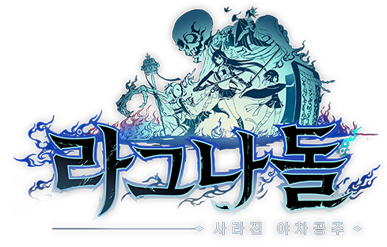
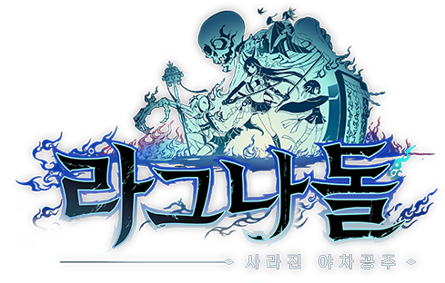
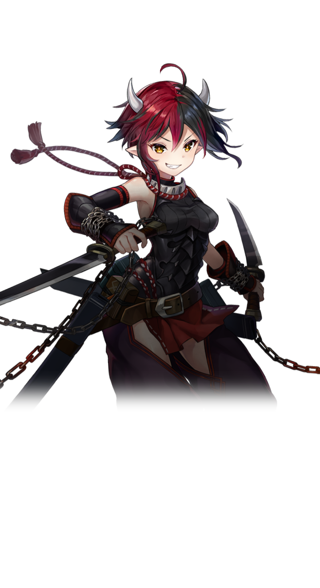
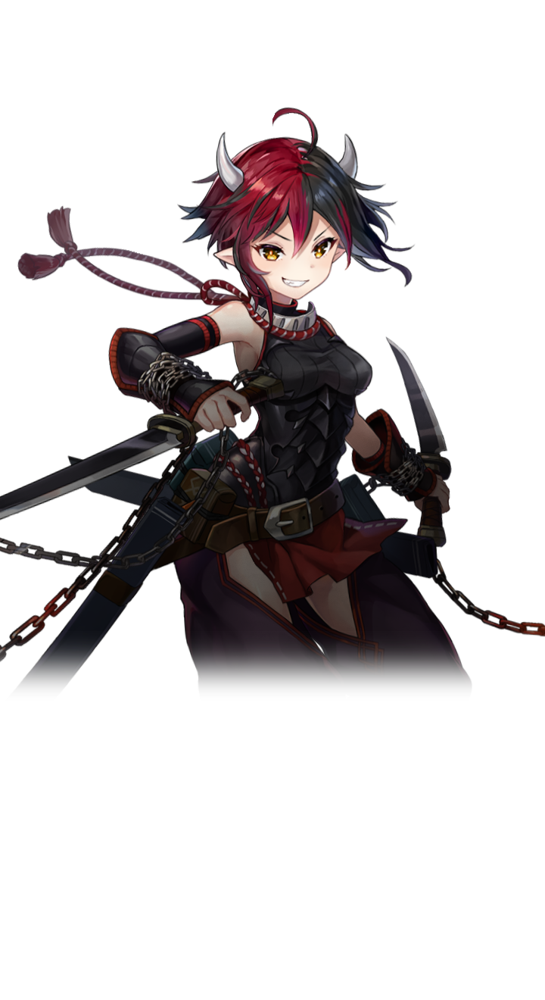

※ 이벤트 상세 내용은 공식 커뮤니티를 통해 확인할 수 있습니다.

※ 이벤트 상세 내용은 공식 커뮤니티를 통해 확인할 수 있습니다.

※ 이벤트 상세 내용은 공식 커뮤니티를 통해 확인할 수 있습니다.


「당신을 반드시 지키기로 했어!」
타키야샤히메의 시중 담당 누리카베 일족에서 태어나 자랐다.
부모를 일찍 여의고 조부모님의 손에 오냐오냐 자랐다.
타키야샤히메를 필두로 자유분방한 수많은 요괴 속에서
얌전하고 남을 잘 챙긴다는 이유로 다른 이들에게 잘 휘둘린다.
요리도 잘하고 씩씩하고 배려심 넘치고
안 보이는 곳에서 늘 노력하는 그녀는 없어서는 안 될 존재
좌우의 「돌벽」은 자유롭게 꺼내고 넣을 수 있다
익숙하지 않은 탓인지 돌벽이 너무 무거워 균형을 잃고 넘어지기도 한다


 



「오니의 피를 이어받아 태어난 이상. 내 모자란 힘을 한탄하게 되는군. 무심코 말이야」
오니와 인간 사이에서 태어난 반요
능력은 있지만 자신감이 생기지 않는 소년
제일 강한 존재인 아버지 슈텐도지의 실력을 따라잡고자
밤낮을 가리지 않고 노력 중이다
하지만 결과가 따르지 않아 초조해하고 있다
원래는 아버지보다도 총명하고 머리가 좋다
오니의 피는 옅어도 지식과 노력으로 어떻게든 싸우고는 있지만
「오니답지 않다」는 이유로 주위에선 별로 이해받지 못해 따르는 자도 없다
그런 키도마루는 힘이 전부인 오니국에서 자신의 자리를 만들지 못했다
반요이자 오니 기준으로(단순히 무력 면에서) 약한 키도마루는
자신이 원래 가진 전략성과 유연성, 성장성 등을 무기로 삼지 못하고
자기 자신을 「오니로서 약하다」고 생각하고 있다.